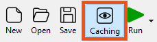
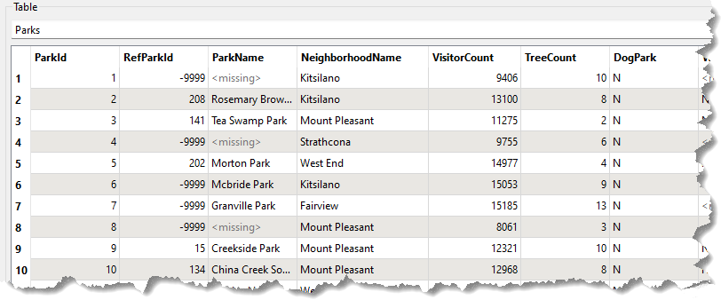
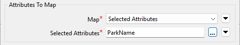
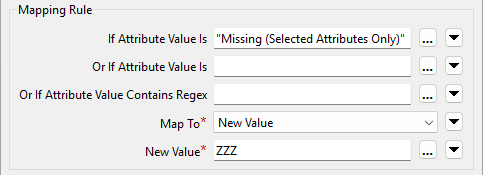
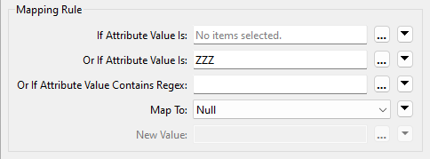
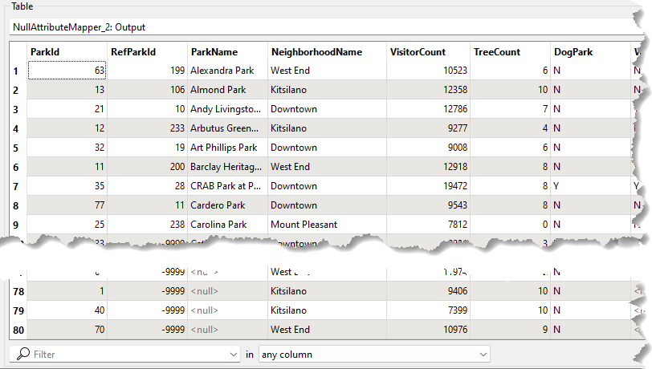
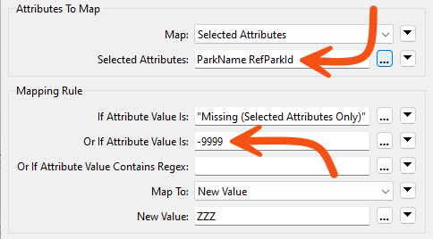

Learning Objectives
After completing this lesson, you’ll be able to:
- Identify null and missing attribute values.
- Set null and missing attribute values.
- Filter out null and missing attribute values from your data.
Resources
- Starting workspace
- C:\FMEData\Workspaces\AdvancedDataTransformation\handle-null-and-missing-values.fmw
- Complete workspace
- C:\FMEData\Workspaces\AdvancedDataTransformation\handle-null-and-missing-values-complete.fmw
- Advanced complete workspace
- C:\FMEData\Workspaces\AdvancedDataTransformation\handle-null-and-missing-values-advanced-complete.fmw
- Parks.zip (MapInfo TAB)
- C:\FMEData\Data\Parks\Parks.tab
Exercise

Sven wants to publish an alphabetical list of city parks for his team. His workspace reads parks data from MapInfo and writes a Geodatabase dataset. The parks sort correctly by name, but the unnamed parks land at the top of the table, and Sven wants them written as nulls at the very end.
In this exercise, you will:
- Identify missing and null attribute values in the source data.
- Use the NullAttributeMapper to map missing values and -9999 sentinels to a placeholder that sorts last.
- Map the placeholder values back to nulls before the writer receives them.
1) Open and Run the Starting Workspace
Running the workspace first shows you the problem you need to solve. By default, FME sorts <null>, <missing>, and empty values to the top of a column, in both Data Preview column sorting and Sorter output. That default helps you spot them while inspecting data, but it works against you when they need to be written last.
- Start FME Workbench (2026.2 or later).
- Open the starting workspace at C:\FMEData\Workspaces\AdvancedDataTransformation\handle-null-and-missing-values.fmw.
- Ensure Caching is enabled.

- Run the workspace.
- Inspect the source dataset as a table.
- The data is ordered by
ParkId, not ParkName.
- The
<missing> values are scattered throughout the ParkName column.

2) Map Missing Values to a Placeholder
You will fix this in two passes. In this first pass, you set the missing ParkName values to something that sorts to the bottom of an alphabetical list, and a later step maps them back to <null>.
- Add a NullAttributeMapper before the Sorter.
- Open the NullAttributeMapper parameters and fill in the form:
- Map: Selected Attributes
- Selected Attributes:
ParkName
- If Attribute Value Is: Missing (Selected Attributes Only)
- Map To: New Value
- New Value:
ZZZ
- Click OK.


3) Map the Placeholder Back to Null
The second pass runs after the sort, so the parks are already in the right order by the time you restore the nulls.
- Add a second NullAttributeMapper after the Sorter.
- Open its parameters and fill in the form:
- Map: Selected Attributes
- Selected Attributes:
ParkName
- Or If Attribute Value Is:
ZZZ
- Map To: Null
- You could map them back to
<missing> instead, because the Geodatabase writer writes those out as nulls. Null is the safer choice when you cannot rely on that writer behavior.
- Click OK.

4) Save and Run the Workspace
This run confirms that both mappings work together. The parks should now sort by name with the unnamed parks at the end rather than the top.
- Save the workspace, then run it.
- Inspect the output.
- The data is sorted by
ParkName, with all null values at the end of the dataset.

5) Fix RefParkId Values
Sven now wants the RefParkId field fixed as well. Many of its values are -9999, the MapInfo equivalent of nothing, and the Geodatabase should hold proper nulls instead. The fix is straightforward, so try working it out before you read the steps below.
- Open the parameters for the first NullAttributeMapper and update the following:
- Selected Attributes: add
RefParkId
- Or If Attribute Value Is:
-9999
- Click OK.

- Open the parameters for the second NullAttributeMapper.
- In Selected Attributes, add
RefParkId.
- Click OK.
- The -9999 values now map to ZZZ alongside the missing
ParkName values, and the second NullAttributeMapper turns both into true nulls.
Challenge
The requirements have changed. Sven no longer wants the incomplete parks written to the main table at all. Any record where either ParkName or RefParkId is null should be filtered out and written to a separate feature type in the Geodatabase. Work through this challenge before you attempt the quiz question below, because you will need the result.
In this challenge, you will:
- Test both
ParkName and RefParkId for null values.
- Route the incomplete records to a separate feature type in the Geodatabase.
Challenge Answer: Open after attempting the challenge.
- Copy the existing writer feature type Parks and rename it NullParks.
- Add an AttributeFilter after the second NullAttributeMapper, so it evaluates the values after they have been mapped back to nulls.
- You don't have to configure it; the default settings will work.
- Connect the <Null> port to a new writer feature type NullParks.
- Connect the <Unfiltered> port to the original Parks feature type.
🔍 Check your results
Open the completed workspace: Advanced Complete Workspace (C:\FMEData\Workspaces\AdvancedDataTransformation\handle-null-and-missing-values-advanced-complete.fmw).